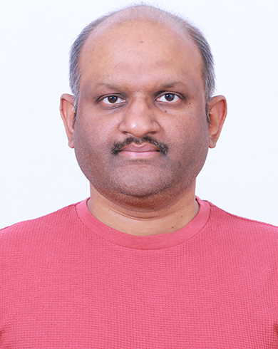

|
K Sandesh Kamath
|
 |
K Sandesh Kamath
Assistant Professor, Gr-I
Birla Institute of Technology and Science(BITS),
K K Birla Goa Campus,
Department of Computer Science and Information Systems,
CC-101, NH-17B, Zuarinagar, Goa- 403726.
Contact: Email, GitHub, LinkedIn
|
Short Bio
Before joining BITS Goa, he briefly worked as an Assistant Professor in SIAS, Krea University. Previously he worked as a Post Doctoral Researcher in LAMP, CVC hosted by Dr. Joost Van De Weijer and Dr. Bogdan Raducanu on problems in Continual Learning and Generative AI. And with Prof Vineeth N Balasubramanian, IIT, Hyderabad sponsored by Microsoft Research India, where I worked on problems on robustness of explainability methods. Obtained my PhD from CMI, Chennai guided by Prof K. V. Subrahmanyam and Dr. Amit Deshpande from Microsoft Research, India. My thesis was based on problems in Adversarial Robustness of Deep Learning Models.
Research Interests
Selected Publications
Xide Xu, Sandesh Kamath, Muhammad Atif Butt, Bogdan Raducanu, An h-space Based Adversarial Attack for Protection Against Few-shot Personalization, ACM Multimedia, (ACM MM’25). pdf
Dipam Goswami, Albin Soutif–Cormerais, Yuyang Liu, Sandesh Kamath, Bartłomiej Twardowski, Joost van de Weijer, Resurrecting Old Classes with New Data for Exemplar-Free Continual Learning, IEEE/CVF Conference on Computer Vision and Pattern Recognition, (CVPR’24). html pdf
Sandesh Kamath, Sankalp Mittal, Amit Deshpande, Vineeth N Balasubramanian, Rethinking Robustness of Model Attributions, The 38th Annual AAAI Conference on Artificial Intelligence, (AAAI’24). html pdf code
Sandesh Kamath, Amit Deshpande, K V Subrahmanyam, Vineeth N Balasubramanian, Can we have it all? On the Trade-off between Spatial and Adversarial Robustness of Neural Networks, Conference on Neural Information Processing Systems (NeurIPS’21) pg 27462-27474. html pdf code
Sandesh Kamath, Amit Deshpande, K V Subrahmanyam, Vineeth N Balasubramanian, Universalization of any adversarial attack using very few test examples - CODS-COMAD 2022 (Best Paper Award, Research Track), pages 72-80. html pdf code
Professional Service
Reviewer : ECML-PKDD 2020, BMVC 2020,2021,2022,2023,2024(Outstanding Reviewer),2025(Outstanding Reviewer), CVPR 2022,2023,2024,2026 ECCV 2022,2024, ACCV 2022,2024, IEEE CAI 2023,2024, ICCV 2023, WACV 2024,2025,2026, AAAI 2025,2026, SafeGenAI@NeurIPS 2024, NeurIPS 2025
Teaching
CSN 110: Introduction to Computer Science & Engineering (IIT Delhi), CSL 101: Introduction to Computers and Programming (IIT Delhi), Machine Learning (CMI, Chennai), Optimization (CMI, Chennai), C5 Visual Recognition(Continual Learning Module)(Master in Computer Vision, Barcelona)
Tutor : NCM IST Mathematics for Computer Science (2018)
Awards
Microsoft Research PostDoctoral Fellowship (2020-2023)
Best Paper Award, Research track, CODS-COMAD-2022
Education
2014-2020 - PhD - Chennai Mathematical Institute (CMI), Chennai
2009-2011 - MTech - Indian Institute of Technology (IITD), Delhi
|